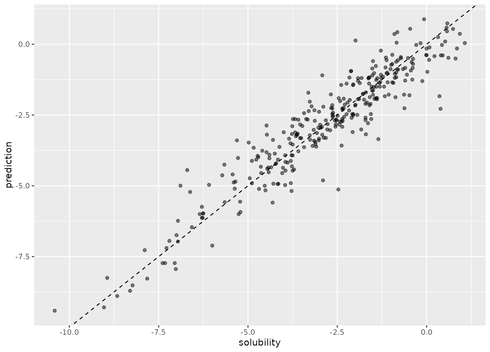
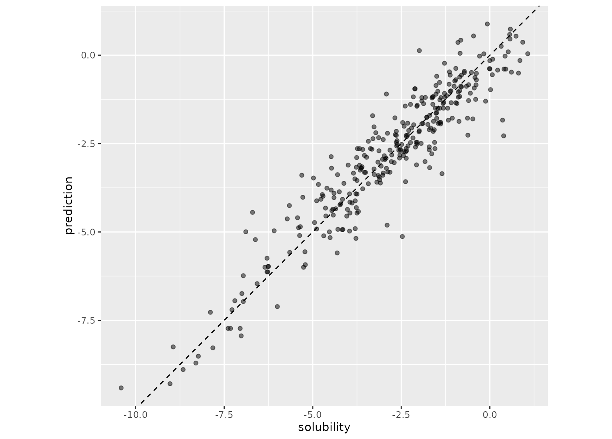
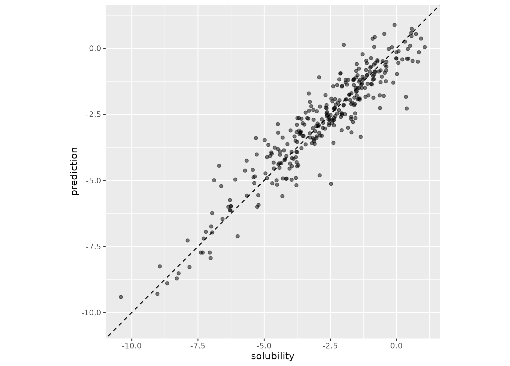

R/coord_obs_pred.R
coord_obs_pred.RdFor regression models, coord_obs_pred() can be used in a ggplot to make the
x- and y-axes have the same exact scale along with an aspect ratio of one.
coord_obs_pred(ratio = 1, xlim = NULL, ylim = NULL, expand = TRUE, clip = "on")Aspect ratio, expressed as y / x. Defaults to 1.0.
Limits for the x and y axes.
Not currently used.
Should drawing be clipped to the extent of the plot panel? A setting
of "on" (the default) means yes, and a setting of "off" means no. In most
cases, the default of "on" should not be changed, as setting clip = "off"
can cause unexpected results. It allows drawing of data points anywhere on
the plot, including in the plot margins. If limits are set via xlim and
ylim and some data points fall outside those limits, then those data points
may show up in places such as the axes, the legend, the plot title, or the
plot margins.
A ggproto object.
data(solubility_test, package = "modeldata")
library(ggplot2)
p <- ggplot(solubility_test, aes(x = solubility, y = prediction)) +
geom_abline(lty = 2) +
geom_point(alpha = 0.5)
p

p + coord_fixed()

p + coord_obs_pred()
